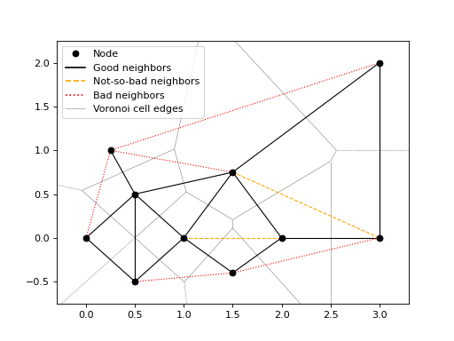

Horizontal resolution#
tl;dr#
mapmetnet allows to compute the mean separation between neighboring stations of a given
network (i.e. the horizontal resolution of the network, in the GBON sense), using
mapmetnet.network.get_mean_sep():
import numpy as np
from mapmetnet.network import get_mean_sep
lats = np.array([0., 1., 2.]) # Station latitudes, in fractional degrees
lons = np.array([0., 1., 2.]) # Station longitudes, in fractional degrees
mean_sep, _, _ = get_mean_sep(lats, lons)
print(f'Mean separation: {mean_sep:.2f} km')
Neighbors, where art thou ?#
The challenge in computing the mean separation between stations/nodes in a given network lies in the
identification of a given node’s neighbors. In mapmetnet, the function
mapmetnet.network.get_mean_sep() relies on mapmetnet.network.get_neighbors() to do
so.
- get_neighbors(lons: ndarray, lats: ndarray) tuple[dict, dict, dict][source]
Assemble a list of vertices separating a series of coordinates on Earth.
- Parameters:
lons (np.ndarray) – array of longitudes, in fractional degrees.
lats (np.ndarray) – array of latitudes, in fractional degrees.
- Returns:
“good” neighbor vertices, “bad” neighbor vertices, and “not so bad” neighbor vertices, where the dict keys are len(2)-lists of the (original) point indices, and the entries are their respective lengths (measured along Great Circles).
- Return type:
dict, dict, dict
- Raises:
MapmetnetError – if some of the input points are duplicated.
This function implements a robust and unambiguous method for identifying “neighboring” nodes in a given network. It was first introduced in Appendix A of the SOFF National Contribution Plan for the Democratic Republic of Congo (see Vogt et al., 2024) to which we refer the interested reader for more details. What follows is a summary of this document.
The “potentially neighboring” vertices are identified via a Delaunay triangulation (see
get_delaunay_vertices()).This approach is warranted by the fact that the Delaunay triangulation is the dual graph of the Voronoi tessellation: a most natural way to define the “immediate neighborhood” of a set of nodes. Specifically, a Voronoi tessellation defines unique polygons around each node in a set, where each polygon contains all the locations that are closer to one specific node than to any other node in the set. Neighboring nodes are those that share a common Voronoi cell edge - a criteria which essentially corresponds to the Delaunay triangulation.
While a Delaunay triangulation allows to identify “mathematical” neighbors, not all of these would typically be considered as being neighbors in the “physical” sense (thinking of stations in the real world). To sort the “true” neighboring vertices from the rest, we use the following mid-point criteria:
Vertices listed as “good” neighbors are those for which the mid-point is closest (strictly) to its end nodes than to any other node in the set.
Vertices that do not respect this criterium are provided in “bad” neighbors and “not so bad” neighbors. The only difference between these two sets is that vertices inside “not so bad” neighbors are located within a (closed) polygon formed by “good” neighbors.
Essentially, this mid-point criteria is used as a simple way to cull vertices towards the outer edges of the network, that one would not typically associated to the concept of “neighboring” stations.
The concept of good neighbor, bad neighbor, and not-so-bad neighbor nodes is illustrated in the following diagram:
(Source code, png, hires.png, pdf)
{kind=link}
{kind=link}

Working on the Sphere#
mapmetnet was built to work with network of stations located on a sphere (i.e. the Earth), which
evidently does matter for the identifiation of neighbors. The necessary adjustments are
implemented in the function mapmetnet.network.get_delaunay_vertices(), which is
used within mapmetnet.network.get_neighbors() to run a Delaunay triangulation.
- get_delaunay_vertices(lons: ndarray, lats: ndarray, **kwargs: str) set[source]
Run a Delaunay triangulation on a series of coordinates, and assemble the list of resulting vertices.
- Parameters:
lons (np.ndarray) – array of longitudes, in fractional degrees.
lats (np.ndarray) – array of latitudes, in fractional degrees.
**kwargs – any other keyword arguments will be fed to cartopy.crs.Stereographic()
- Returns:
the list of individual vertices, provided as len(2)-lists of (original) point indices.
- Return type:
list
This routine performs a Delaunay triangulation using the point coordinates converted to a Stereographic projection. This allows to run a 2D (instead of 3D) Delaunay triangulation where the identified pairs of neighbor stations are the same as those that would be ientified if the triangulation was performed on the surface of the sphere.
See Saalfeld, Cartography and Geographic Information Science, Vol. 26, No.4, 1999, pp. 289-296.
https://www.tandfonline.com/doi/pdf/10.1559/152304099782294168